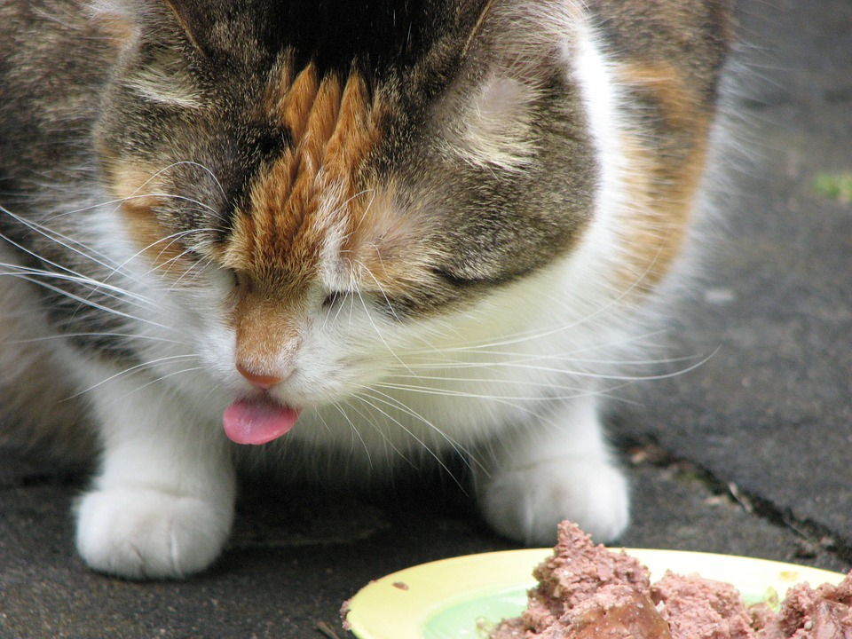
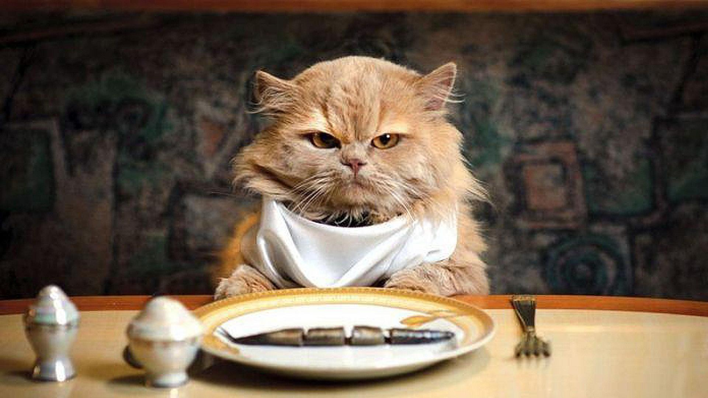

Cats and food have a long loving relationship, much like myself and food, and they are often seen devouring food not made for their kind. Let's be honest though, if we had to eat the kibble they are served, we would not be happy either.
Here, a cat is seen sticking its tongue out in disgust at the taste of the horrible food humans feed it.
This cat gets to enjoy the pleasures of fine dining, as any cat should. See the satisfaction in the cat's eyes as his human finally serves him what he deserves.